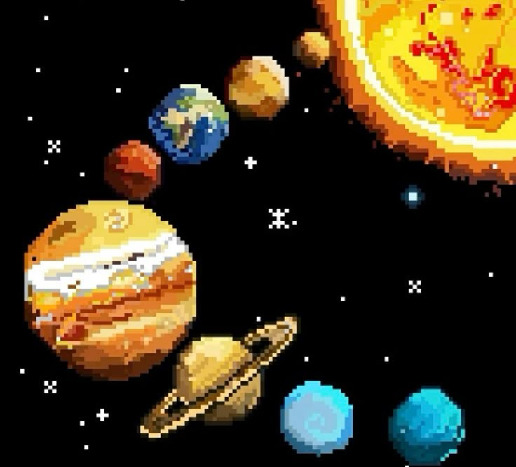

| 🌍 Planetas del Universo | |
| Inicio Galaxias Planetas Exploración Recomendaciones | |
| Conoce los planetas del sistema solar 🚀 | |
Los planetasLos planetas son cuerpos celestes que giran alrededor de una estrella. En nuestro sistema solar existen ocho planetas principales. Algunos planetas son rocosos como la Tierra y Marte, mientras que otros son gaseosos como Júpiter y Saturno.  |
Dato curiosoJúpiter es el planeta más grande del sistema solar. |
|
2026 Todos los derechos reservados Karla Rubí Magaña Alcudia |
|